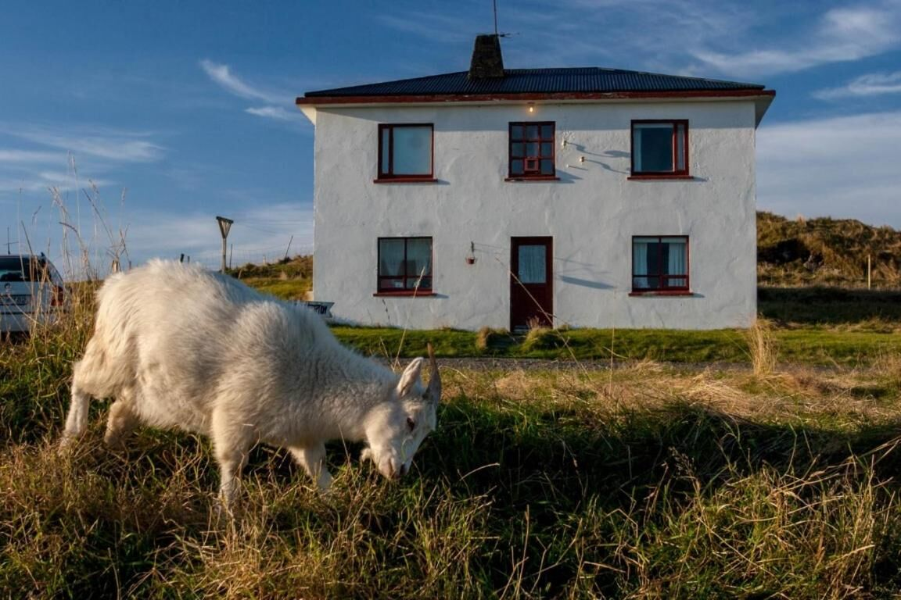
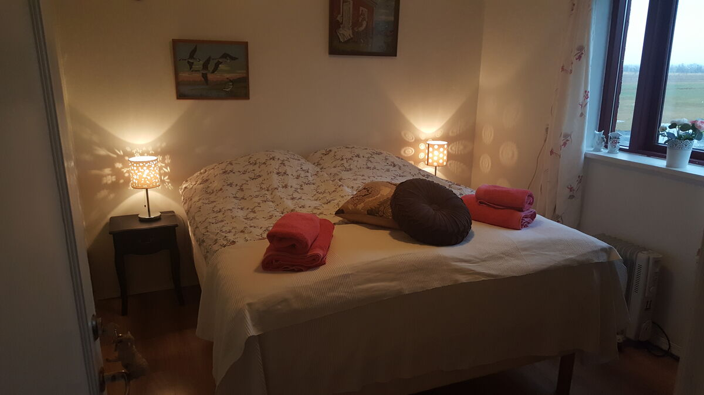
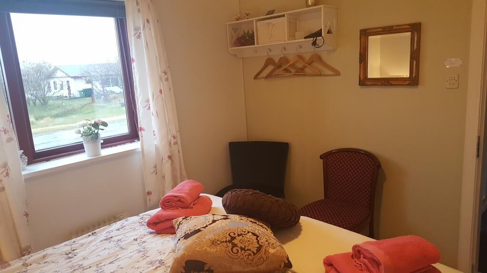
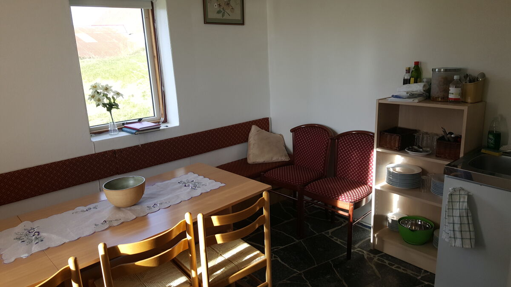
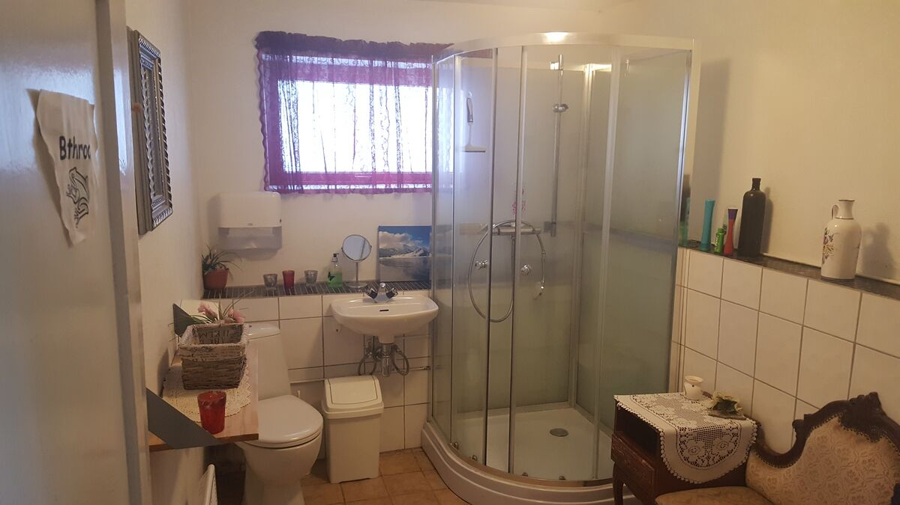

Gamla íbúðarhúsið
10 gestir í 4 tveggja manna herbergjum og 2 eins manns herbergjum, baðherbergi á hverri hæð, gestaeldhús.

Tveggja manna herbergi
4 tveggja manna herbergi.

Eins manns herbergi
2 eins manns herbergi.

Gestaeldhús
Eldhús með búnaði þar sem gestir geta eldað.

Baðherbergi
Eitt baðherbergi á hverri hæð.